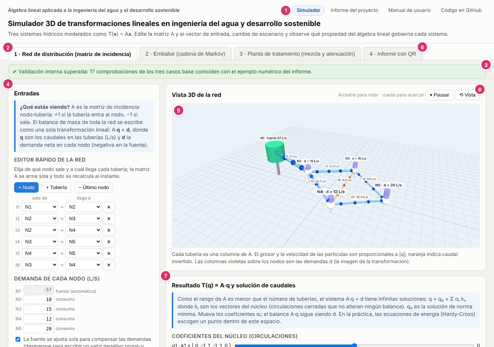
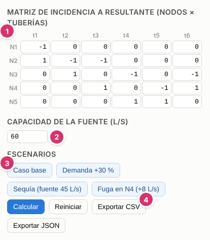
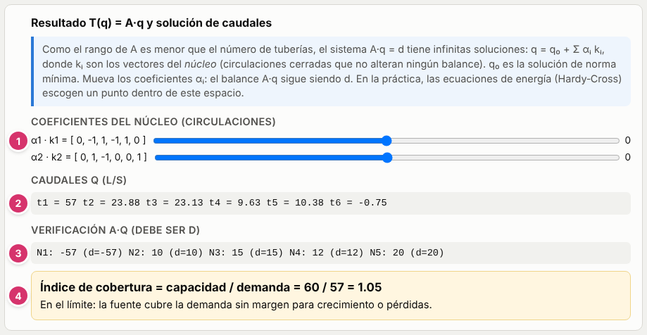
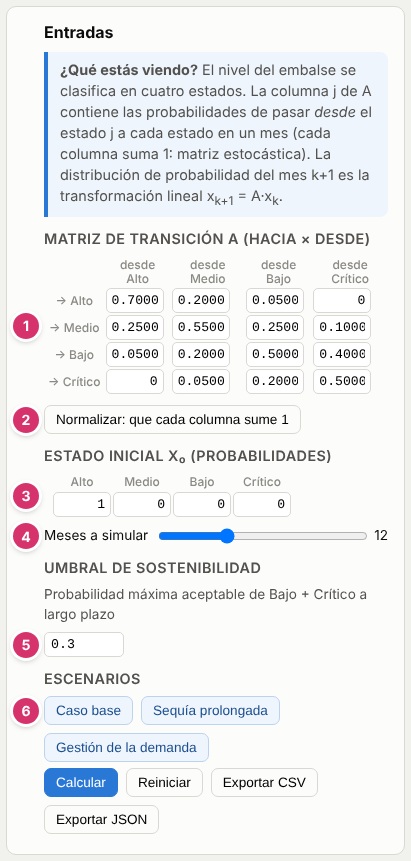
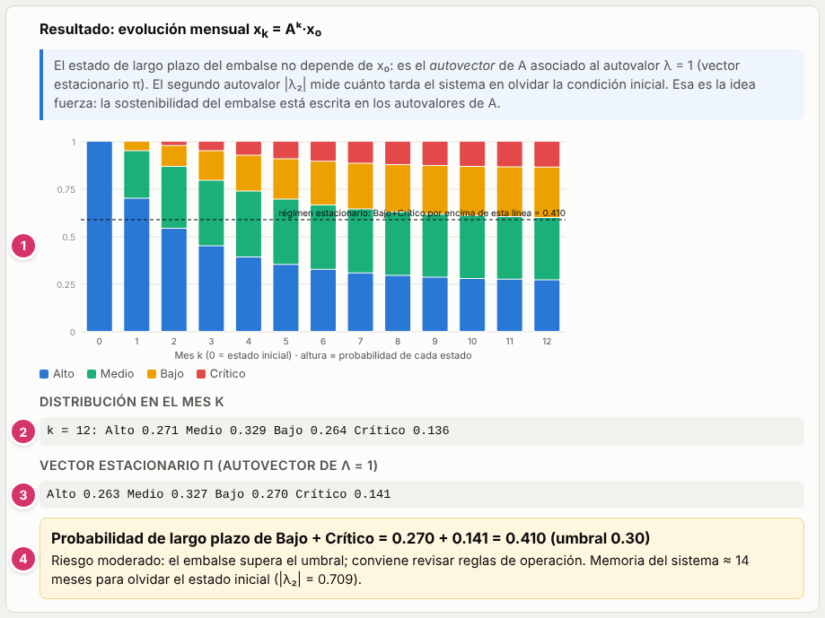
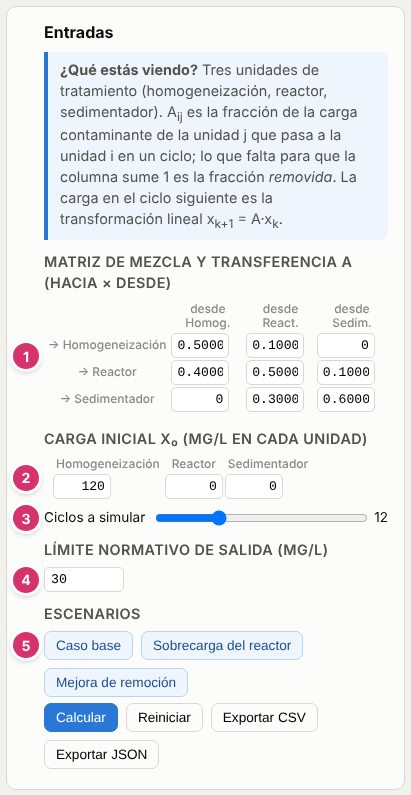
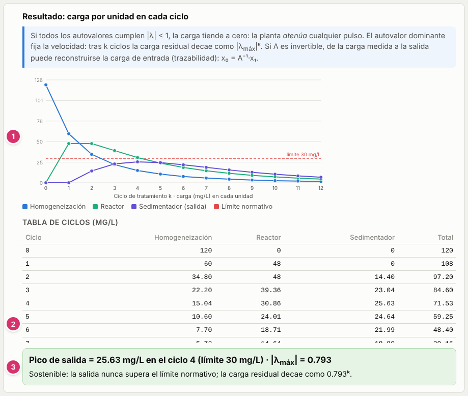
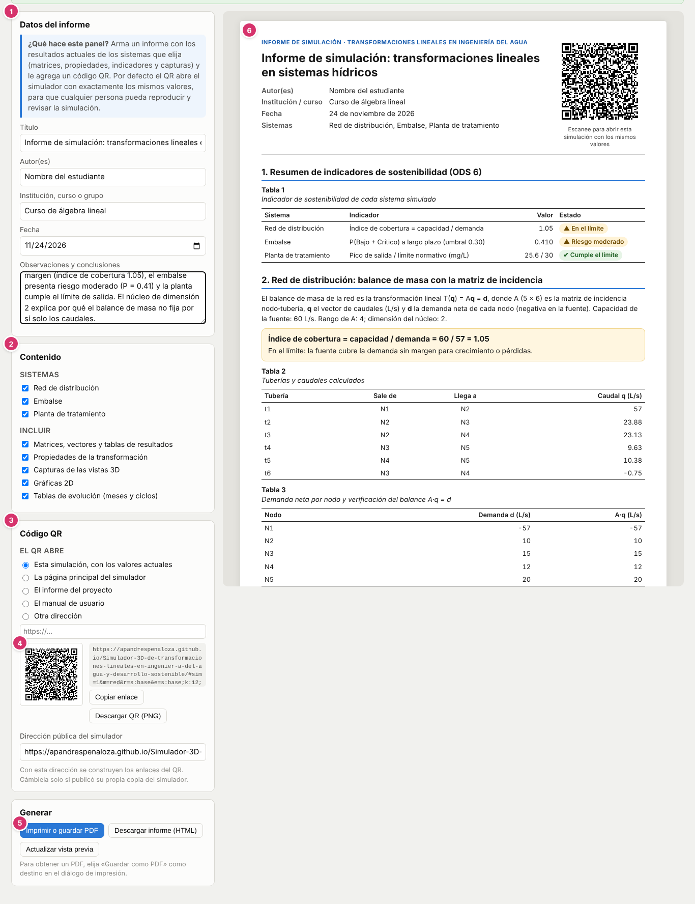
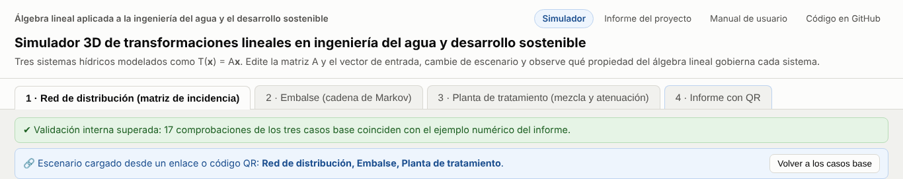
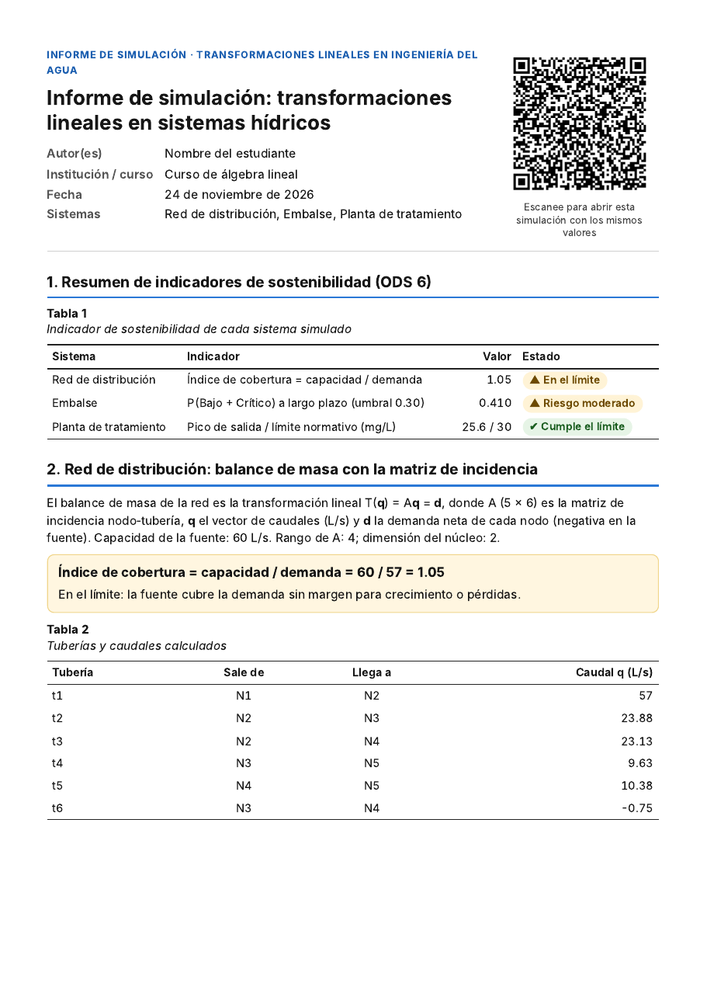

Contenido
- 1. Presentación
- 2. Requisitos y acceso
- 3. Recorrido por la interfaz
- 4. Módulo 1: red de distribución
- 5. Módulo 2: embalse
- 6. Módulo 3: planta de tratamiento
- 7. Informe con código QR
- 8. Exportar datos
- 9. Actividades guiadas
- 10. Solución de problemas
- 11. Glosario
- 12. Créditos y licencias
1. Presentación
El Simulador 3D de transformaciones lineales en ingeniería del agua y desarrollo sostenible es una aplicación web gratuita que muestra cómo una sola idea del álgebra lineal —la transformación T(x) = Ax— describe tres sistemas reales de gestión del agua. Cada sistema ocupa una pestaña, y la cuarta pestaña produce informes con código QR:
- Red de distribución: la matriz de incidencia convierte los caudales de las tuberías en el balance de cada nodo. Muestra por qué el balance de masa no basta para conocer los caudales cuando la red tiene ciclos.
- Embalse: una cadena de Markov describe cómo cambia el nivel de almacenamiento mes a mes. El autovector del autovalor 1 indica dónde pasará el embalse la mayor parte del tiempo.
- Planta de tratamiento: una matriz de mezcla describe cómo pasa el contaminante de una unidad a otra. Sus autovalores indican si la planta atenúa un pulso de carga.
- Informe con QR: reúne los resultados en un documento imprimible con un código QR que reabre exactamente la misma simulación.
Está pensado para estudiantes y docentes de álgebra lineal, hidráulica e ingeniería ambiental, y para talleres con comunidades interesadas en la gestión del agua. No necesita instalación ni cuenta de usuario, y todos los cálculos se hacen en su propio navegador.
1.1 Cómo usar este manual
Las secciones 2 y 3 explican cómo entrar al simulador y cómo está organizada la pantalla. Las secciones 4 a 6 describen cada sistema; la 7, el panel de informes con código QR, y la 8, la exportación de datos. La sección 9 propone actividades guiadas con sus respuestas, y las secciones 10 y 11 reúnen la solución de problemas y un glosario. En las figuras, los círculos de color con números señalan los elementos que se explican debajo.
2. Requisitos y acceso
2.1 Requisitos
- Un navegador actualizado: Google Chrome, Microsoft Edge, Mozilla Firefox o Safari.
- La aceleración gráfica (WebGL) activada en el navegador, necesaria para las vistas 3D. Casi todos los equipos la tienen activada de fábrica.
- Conexión a internet solo para abrir la página; los cálculos no la necesitan.
- Un computador, una tableta o un teléfono. En pantallas pequeñas los paneles se apilan uno debajo de otro.
2.2 Abrir el simulador en línea
Escriba la dirección del simulador en el navegador o escanee con la cámara del teléfono el código QR correspondiente:
apandrespenaloza.github.io/Simulador-3D-de-transformaciones-lineales-en-ingenier-a-del-agua-y-desarrollo-sostenible/
apandrespenaloza.github.io/Simulador-3D-de-transformaciones-lineales-en-ingenier-a-del-agua-y-desarrollo-sostenible/informe.html
apandrespenaloza.github.io/Simulador-3D-de-transformaciones-lineales-en-ingenier-a-del-agua-y-desarrollo-sostenible/manual.html
2.3 Usarlo sin conexión
- Abra el repositorio en GitHub.
- Pulse el botón verde Code y luego Download ZIP.
- Descomprima el archivo en una carpeta de su equipo.
- Abra
index.htmlcon el navegador. Los archivosthree.min.jsyqrcode.jsdeben estar en la misma carpeta.
2.4 Publicar su propia copia
Si quiere modificar el simulador o usarlo con su grupo desde su propia cuenta de GitHub:
- Inicie sesión en GitHub y pulse Fork en el repositorio para crear una copia en su cuenta.
- En su copia, entre a Settings → Pages, elija Deploy from a branch, la rama
mainy la carpeta/ (root), y pulse Save. - Espere uno o dos minutos: el sitio quedará en
https://<su-usuario>.github.io/<nombre-del-repositorio>/. - Para cambiar un archivo, ábralo en GitHub, pulse el lápiz (Edit) y guarde con Commit changes. GitHub Pages publica el cambio en uno o dos minutos.
Los códigos QR de su copia usan automáticamente la dirección de su sitio, porque el simulador toma la dirección de la página en la que está abierto.
3. Recorrido por la interfaz
Al abrir el simulador verá la pantalla de la Figura 1. Los números señalan sus partes principales.
Figura 1
Pantalla principal del simulador

- Enlaces del sitio: simulador, informe del proyecto, este manual y el código en GitHub.
- Pestañas de los módulos: red de distribución, embalse, planta de tratamiento e informe con QR.
- Aviso de validación interna: al abrir la página, el simulador repite 17 cálculos de referencia. Si el aviso está en verde, todo funciona correctamente.
- Panel de entradas: aquí se escriben la matriz A, los vectores y los parámetros, y se eligen los escenarios.
- Vista 3D: representación animada del sistema.
- Controles de la vista 3D: Pausar detiene la animación y Vista devuelve la cámara a su posición inicial.
- Resultados: el cálculo de T(x) = Ax y el indicador de sostenibilidad; más abajo están la gráfica 2D y las propiedades de la transformación.
- Informe con QR: la pestaña que crea informes imprimibles.
3.1 Mover la vista 3D
- Rotar: arrastre con el ratón, o con un dedo en pantallas táctiles.
- Acercar o alejar: gire la rueda del ratón (esta función no está disponible en pantallas táctiles).
- Pausar o reanudar la animación: botón Pausar.
- Volver a la vista inicial: botón Vista.
3.2 Escribir valores
- Haga clic en una celda y escriba el número: el contenido anterior queda seleccionado para que lo reemplace de inmediato.
- Puede usar punto o coma decimal:
0.25y0,25valen lo mismo. - Los resultados se recalculan mientras escribe. El botón Calcular sigue disponible si prefiere actualizar a mano.
- La tecla Enter pasa a la celda siguiente de la misma tabla, y la tecla Tab avanza entre todos los campos.
- Si una celda se pone roja, el texto no es un número válido; mientras tanto, el simulador conserva el último valor correcto.
- Las celdas grises no se pueden editar porque se calculan solas; por ejemplo, la fuente de la red cuando la fuente automática está activada.
4. Módulo 1: red de distribución
4.1 Qué representa
Cada tubería es una columna de la matriz de incidencia A y cada nodo es una fila: la entrada vale −1 en el nodo del que sale la tubería, +1 en el nodo al que llega y 0 en los demás. Si q son los caudales de las tuberías (L/s) y d la demanda neta de cada nodo, el balance de masa de toda la red es Aq = d. La fuente tiene demanda negativa porque entrega agua a la red.
4.2 Construir la red con el editor rápido
El editor rápido (Figura 2) evita escribir la matriz a mano.
Figura 2
Editor rápido de la red

- + Nodo: agrega un nodo nuevo, conectado al último nodo con una tubería nueva.
- + Tubería: agrega una tubería sin conectar para que elija sus extremos.
- sale de: nodo del que sale el agua de la tubería (el −1 de la columna).
- llega a: nodo al que llega el agua (el +1 de la columna).
- ✕: elimina la tubería.
- Fuente automática: su demanda se calcula sola para compensar las demás.
- Casilla de fuente automática: desmárquela para escribir usted el valor de la fuente.
Para construir una red nueva:
- Pulse + Nodo tantas veces como nodos necesite (hasta 12). Cada nodo nuevo queda conectado al anterior.
- Pulse + Tubería para cada conexión adicional (hasta 16 tuberías) y elija en las listas el nodo de salida y el de llegada.
- Escriba la demanda de cada nodo en Demanda de cada nodo (L/s). Deje la fuente en automático para que el balance cierre.
- Revise la vista 3D: las tuberías sin conectar no se dibujan y los nodos sin tuberías aparecen en rojo como «sin conexión».
- Si necesita quitar el último nodo, pulse − Último nodo; también se eliminan sus tuberías.
4.3 Editar la matriz directamente
La matriz de incidencia resultante aparece debajo de las demandas (Figura 3) y también puede editarse celda por celda. Para que represente una red, cada columna debe tener exactamente un −1 y un +1. Si escribe otros valores, el simulador hace los cálculos igualmente, pero esa columna no se dibuja como tubería.
Figura 3
Matriz de incidencia, capacidad de la fuente y escenarios

- Matriz de incidencia A (filas: nodos; columnas: tuberías).
- Capacidad máxima de la fuente, en L/s.
- Escenarios precargados.
- Exportación de resultados (sección 8).
4.4 Capacidad y escenarios
La capacidad de la fuente es el caudal máximo que puede entregar. El simulador la compara con la demanda total mediante el índice de cobertura (IC = capacidad / demanda). Los escenarios precargados cambian la red con un clic (Tabla 1).
Tabla 1
Escenarios del módulo de la red
| Escenario | Qué cambia | Índice de cobertura |
|---|---|---|
| Caso base | Red de 5 nodos y 6 tuberías; demanda total de 57 L/s; capacidad de 60 L/s | 1.05 (en el límite) |
| Demanda +30 % | Todas las demandas aumentan un 30 % | 0.81 (no sostenible) |
| Sequía | La capacidad de la fuente baja a 45 L/s | 0.79 (no sostenible) |
| Fuga en N4 | La demanda de N4 sube de 12 a 20 L/s | 0.92 (no sostenible) |
4.5 Leer los resultados
Figura 4
Resultados del módulo de la red

- Coeficientes del núcleo: cada deslizador suma una circulación αk que recorre un ciclo de la red. Al moverlos, los caudales cambian pero el balance no.
- Caudales q: caudal calculado en cada tubería (L/s). Con los deslizadores en cero se muestra la solución de norma mínima.
- Verificación A·q: comprueba que el resultado reproduce las demandas d.
- Indicador de sostenibilidad: verde si la fuente cubre la demanda con al menos un 10 % de margen, amarillo si la cubre justo y rojo si no la cubre.
La tarjeta Propiedades de la transformación explica el significado físico del rango, la dimensión del núcleo, la inyectividad y la norma de la solución. En el caso base, por ejemplo, el rango es 4 (nodos − 1: la red es conexa) y la dimensión del núcleo es 2 (tuberías − rango): faltan dos ecuaciones de energía para conocer los caudales reales.
4.6 Mensajes de advertencia
Tabla 2
Mensajes del módulo de la red
| Mensaje | Qué significa | Qué hacer |
|---|---|---|
| Sistema inconsistente | Las demandas no suman cero, así que ningún vector de caudales puede cerrar el balance | Active la casilla de fuente automática o corrija el valor de la fuente |
| Nodos sin ninguna tubería | Hay filas de ceros en A | Conecte esos nodos o elimínelos con − Último nodo |
| Tuberías sin conectar | Hay columnas sin un −1 o sin un +1 | Elija «sale de» y «llega a» en el editor rápido |
5. Módulo 2: embalse
5.1 Qué representa
El nivel del embalse se clasifica en cuatro estados: Alto, Medio, Bajo y Crítico. La columna j de la matriz A contiene las probabilidades de pasar en un mes desde el estado j a cada uno de los cuatro estados; por eso cada columna debe sumar 1. Si xk es la probabilidad de cada estado en el mes k, la del mes siguiente es xk+1 = Axk.
5.2 Entradas
Figura 5
Panel de entradas del embalse

- Matriz de transición: las filas son el estado de llegada y las columnas, el estado de origen.
- Normalizar: ajusta cada columna para que sume 1; úselo después de editar la matriz.
- Estado inicial x₀: probabilidad de cada estado en el mes 0. Por ejemplo, [1, 0, 0, 0] significa que hoy el embalse está en nivel Alto.
- Meses a simular: de 1 a 36.
- Umbral de sostenibilidad: probabilidad máxima aceptable de estar en Bajo o Crítico a largo plazo.
- Escenarios: caso base, sequía prolongada y gestión de la demanda.
5.3 Resultados
Figura 6
Resultados del módulo del embalse

- Gráfica de barras apiladas: cada barra es un mes, y sus colores, la probabilidad de cada estado. La línea punteada marca el valor de largo plazo de Bajo + Crítico.
- Distribución en el mes k: probabilidades del último mes simulado.
- Vector estacionario π: autovector de A para λ = 1. Es la distribución hacia la que tiende el embalse, sin importar dónde empiece.
- Indicador: compara la probabilidad de Bajo + Crítico en π con el umbral e informa cuántos meses tarda el sistema en olvidar su estado inicial.
En la vista 3D, el depósito de la izquierda muestra el nivel esperado mes a mes, y la superficie de barras de la derecha, la probabilidad de cada estado en cada mes.
6. Módulo 3: planta de tratamiento
6.1 Qué representa
La planta tiene tres unidades: homogeneización, reactor y sedimentador. La entrada aij de la matriz es la fracción de la carga contaminante de la unidad j que pasa a la unidad i en un ciclo, y lo que le falta a una columna para sumar 1 es la fracción que esa unidad remueve. Si xk es la carga (mg/L) de cada unidad en el ciclo k, la del ciclo siguiente es xk+1 = Axk.
6.2 Entradas
Figura 7
Panel de entradas de la planta

- Matriz de mezcla y transferencia: cada columna debe sumar como máximo 1.
- Carga inicial x₀: pulso de contaminante en cada unidad (mg/L).
- Ciclos a simular: de 1 a 40.
- Límite normativo de salida: carga máxima permitida en el sedimentador, que es la unidad de salida.
- Escenarios: caso base, sobrecarga del reactor y mejora de la remoción.
6.3 Resultados
Figura 8
Resultados del módulo de la planta

- Gráfica de carga por ciclo: una curva por unidad y la línea roja del límite normativo.
- Tabla de ciclos: carga de cada unidad y carga total en cada ciclo.
- Indicador: verde si la salida nunca supera el límite; amarillo si lo supera y luego vuelve a cumplirlo; rojo si no lo cumple en el horizonte simulado o si la planta no atenúa la carga.
En Propiedades de la transformación encontrará la remoción de cada unidad, los autovalores (si todos tienen módulo menor que 1, la planta atenúa cualquier pulso), los ciclos necesarios para reducir la carga un 90 % y la matriz inversa, que permite reconstruir la carga del ciclo anterior. En la vista 3D, la altura del relleno de cada tanque es la carga y el anillo rojo marca el límite; el sedimentador se pinta de rojo cuando lo supera.
7. Informe con código QR
7.1 Para qué sirve
La pestaña 4 · Informe con QR crea un informe con los resultados actuales y le agrega un código QR. Quien escanee el código abrirá el simulador con exactamente las mismas matrices, vectores y parámetros, y podrá comprobar los resultados por su cuenta. Sirve para entregar tareas, documentar escenarios en clase o llevar los resultados a un taller con la comunidad.
Figura 9
Panel «Informe con QR»

- Datos del informe: título, autores, institución o curso, fecha y observaciones.
- Contenido: sistemas que se incluyen y elementos de cada uno.
- Código QR: qué abre el código y desde qué dirección.
- Vista previa del QR, con el enlace completo y los botones para copiarlo o descargar el código.
- Generar: imprimir o guardar en PDF, descargar en HTML o actualizar la vista previa.
- Vista previa de la hoja: así se verá el informe impreso.
7.2 Crear un informe paso a paso
- Prepare los escenarios en las pestañas 1, 2 y 3. El informe usa los valores que estén cargados en ese momento.
- Abra la pestaña 4 · Informe con QR.
- Escriba el título, los autores, la institución o el curso y la fecha.
- Escriba sus observaciones y conclusiones. Separe los párrafos con una línea en blanco.
- En Contenido, marque los sistemas y los elementos que quiere incluir. Si desmarca las capturas 3D y las tablas de evolución, el informe será más corto.
- En Código QR, elija qué abrirá el código (Tabla 3).
- Revise la vista previa de la derecha: se actualiza sola cuando cambia cualquier dato.
- Pulse Imprimir o guardar PDF o Descargar informe (HTML).
Tabla 3
Opciones del código QR
| Opción | Qué abre el código |
|---|---|
| Esta simulación, con los valores actuales | El simulador con las mismas matrices y parámetros de los sistemas incluidos en el informe. Es la opción predeterminada. |
| La página principal del simulador | El simulador con sus casos base. Produce el código más pequeño. |
| El informe del proyecto | La versión web del informe en normas APA. |
| El manual de usuario | Este manual. |
| Otra dirección | Cualquier página que empiece por https://, por ejemplo una carpeta compartida o un formulario. |
7.3 Imprimir o guardar en PDF
- Pulse Imprimir o guardar PDF. Se abrirá el diálogo de impresión del navegador, que muestra solo la hoja del informe.
- En Destino, elija Guardar como PDF (Chrome y Edge), Microsoft Print to PDF (Windows) o una impresora.
- Use papel A4 o Carta, orientación vertical y márgenes predeterminados.
- Pulse Guardar o Imprimir.
7.4 Descargar el informe, el código o el enlace
- Descargar informe (HTML): guarda un archivo que se abre en cualquier navegador, con las imágenes y el código QR incluidos; puede enviarse por correo.
- Descargar QR (PNG): guarda solo el código, en alta resolución, para pegarlo en diapositivas, carteles o documentos.
- Copiar enlace: copia la dirección completa para compartirla por mensaje o por correo.
7.5 Abrir una simulación desde un QR o un enlace
Al escanear el código, el teléfono abre el simulador y carga el escenario. En la parte superior aparece un aviso que indica qué sistemas se cargaron (Figura 10). El botón Volver a los casos base restablece los valores originales.
Figura 10
Aviso al abrir una simulación desde un enlace o un código QR

7.6 Privacidad
El informe se genera en su navegador: el simulador no envía ni guarda datos en ningún servidor. El código QR contiene solo la dirección del simulador y los valores numéricos de la simulación. Los nombres de los autores y las observaciones aparecen en el informe impreso, pero no viajan en el código QR; para compartirlos, comparta el PDF o el archivo HTML.
7.7 Ejemplo de informe
Figura 11
Primera página de un informe generado

8. Exportar datos
Cada módulo tiene dos botones de exportación (Tabla 4). Los archivos se guardan en la carpeta de descargas del navegador.
Tabla 4
Contenido de los archivos exportados
| Módulo | CSV (resultados) | JSON (modelo) |
|---|---|---|
| Red | Caudal de cada tubería; demanda y A·q de cada nodo; rango, dimensión del núcleo e índice de cobertura | Matriz A, vector d y capacidad |
| Embalse | Distribución de cada mes, vector estacionario π y autovalores | Matriz A y estado inicial x₀ |
| Planta | Carga de cada unidad en cada ciclo, autovalores, pico de salida y límite | Matriz A y carga inicial x₀ |
Los archivos CSV usan punto y coma (;) como separador. En un Excel configurado en español se abren con doble clic; si las columnas aparecen juntas, use Datos → Obtener datos → Desde el texto/CSV y elija el punto y coma como delimitador.
9. Actividades guiadas
Cada actividad toma entre 5 y 15 minutos. Al final de cada una se indica el resultado esperado.
Actividad 1. El núcleo no cambia el balance
- En el módulo 1, pulse Caso base.
- Mueva el deslizador α₁ hasta 10 y observe los caudales y la verificación A·q.
- Mueva ahora α₂ hasta −5.
Pregunta: ¿por qué cambian los caudales y no cambia el balance? Resultado esperado: la verificación A·q sigue mostrando [−57, 10, 15, 12, 20], porque Ak1 = Ak2 = 0: sumar un vector del núcleo no altera la imagen. Los caudales reales los fijan las ecuaciones de energía, que este modelo lineal no incluye.
Actividad 2. De red mallada a árbol
- Pulse Caso base y elimine la tubería t6 con su botón ✕.
- Elimine también la nueva última tubería, t5 (N4 → N5).
- Observe la dimensión del núcleo y los caudales.
Resultado esperado: rango 4 y núcleo de dimensión 0. La red ya no tiene ciclos (es un árbol), así que el balance de masa determina los caudales de forma única: q = [57, 35, 12, 20] L/s. Los deslizadores del núcleo desaparecen.
Actividad 3. Sequía en el embalse
- En el módulo 2, pulse Caso base y anote π y la probabilidad de Bajo + Crítico.
- Pulse Sequía prolongada y luego Gestión de la demanda, y anote los mismos valores.
- Cambie el estado inicial x₀ (por ejemplo, a [0, 0, 0, 1]) y observe π.
Resultado esperado: la probabilidad de largo plazo de Bajo + Crítico pasa de 0.410 (riesgo moderado) a 0.719 con la sequía (no sostenible) y a 0.167 con la gestión de la demanda (sostenible). El vector π no cambia con x₀: el largo plazo depende solo de la matriz.
Actividad 4. ¿Cuánto debe remover el sedimentador?
- En el módulo 3, pulse Caso base.
- Cambie la celda de la fila «→ Sedimentador» y la columna «desde Sedim.» (A₃₃) a 0.65, luego a 0.70 y luego a 0.75. Un valor más alto significa que el sedimentador retiene más contaminante y remueve menos.
- Observe en cada caso el pico de salida y el autovalor dominante.
Resultado esperado: el pico de salida sube a 27.25 mg/L con 0.65 y a 29.56 mg/L con 0.70; con 0.75 llega a 32.35 mg/L y supera el límite de 30 mg/L. Por tanto, el sedimentador debe remover al menos el 20 % de la carga por ciclo. El autovalor dominante pasa de 0.79 a 0.87: cuanto más se acerca a 1, más lenta es la atenuación.
Actividad 5. Compartir un escenario con QR
- Prepare un escenario propio en cualquier módulo (por ejemplo, cambie una demanda de la red).
- Abra la pestaña 4 · Informe con QR y escriba su nombre y una conclusión.
- Escanee con su teléfono el código QR de la vista previa.
Resultado esperado: el teléfono abre el simulador con el aviso «Escenario cargado desde un enlace o código QR» y muestra los mismos resultados que su computador.
10. Solución de problemas
Tabla 5
Problemas frecuentes y cómo resolverlos
| Problema | Causa probable | Solución |
|---|---|---|
| No aparece la vista 3D | El navegador no tiene WebGL activo o falta el archivo three.min.js | Actualice el navegador y active la aceleración por hardware. Si usa una copia local, verifique que three.min.js esté junto a index.html |
| Los resultados no cambian al escribir | La celda está en rojo (texto no válido) o es una celda gris que se calcula sola | Escriba solo números, con punto o coma decimal. Para editar la fuente de la red, desmarque la casilla de fuente automática |
| «A no es estocástica» | Alguna columna de la matriz del embalse no suma 1 o tiene valores negativos | Pulse Normalizar o corrija los valores |
| «Sistema inconsistente» | Las demandas de la red no suman cero | Active la casilla de fuente automática |
| «Matriz físicamente inválida» | Alguna columna de la planta suma más de 1 o tiene valores negativos | Reduzca los valores de esa columna: una unidad no puede generar contaminante |
| El QR abre el simulador sin mi escenario | Se eligió otra opción de QR o la dirección pública no corresponde al sitio | Elija «Esta simulación» y revise el campo Dirección pública del simulador |
| El teléfono no lee el QR | El código está impreso muy pequeño o hay poca luz | Imprímalo con al menos 4 cm de lado, incluya menos sistemas en el informe o use la opción de la página principal, que genera un código más simple |
| La página no muestra los cambios recientes | El navegador conserva una copia antigua | Recargue con Ctrl + F5 (Cmd + Mayús + R en Mac) |
| El PDF sale sin colores | El navegador omite los fondos al imprimir | Active «Gráficos de fondo» en las opciones del diálogo de impresión |
| La descarga no se inicia | El navegador bloqueó la descarga | Permita las descargas del sitio en el aviso del navegador |
11. Glosario
- Autovalor (λ) y autovector (v): número y dirección que cumplen Av = λv; describen el comportamiento de largo plazo de un sistema que se repite.
- Código QR: código bidimensional que guarda texto, en este caso la dirección del simulador con los valores de la simulación. Incluye corrección de errores, por lo que puede leerse aunque esté parcialmente dañado.
- Determinante: número asociado a una matriz cuadrada; si es distinto de cero, la transformación es invertible.
- Imagen: conjunto de todas las salidas posibles Ax; en la red, las demandas que pueden atenderse con algún vector de caudales.
- Índice de cobertura: capacidad de la fuente dividida por la demanda total; un valor mayor o igual que 1 indica que la fuente alcanza.
- Matriz de incidencia: matriz que describe una red: cada columna es una tubería, con −1 en el nodo de salida y +1 en el de llegada.
- Matriz estocástica: matriz de entradas no negativas cuyas columnas suman 1; describe probabilidades de transición.
- Norma mínima: entre todas las soluciones de Aq = d, la de menor longitud; es la que el simulador muestra con los deslizadores en cero.
- Núcleo: conjunto de vectores que la transformación convierte en cero; en la red, las circulaciones que no cambian ningún balance.
- Rango: número de direcciones independientes de la imagen; en una red conexa es igual al número de nodos menos uno.
- Remoción: fracción de la carga contaminante que una unidad elimina en un ciclo (1 menos la suma de su columna).
- Transformación lineal: función que respeta sumas y múltiplos; toda transformación lineal entre espacios de dimensión finita se escribe como T(x) = Ax.
- Vector estacionario (π): distribución que no cambia al aplicar la matriz (Aπ = π); indica el comportamiento de largo plazo del embalse.
12. Créditos y licencias
Simulador, informe y manual: Andrés Mauricio Peñaloza Fernández (2026).
- Vistas 3D: three.js r128, © three.js authors, licencia MIT.
- Códigos QR: qrcode-generator 1.4.4, © Kazuhiko Arase, licencia MIT. «QR Code» es una marca registrada de DENSO WAVE INCORPORATED.
Cómo citar el simulador (APA 7): Peñaloza Fernández, A. M. (2026). Simulador 3D de transformaciones lineales en ingeniería del agua y desarrollo sostenible (Versión 2.0) [Software]. GitHub. https://apandrespenaloza.github.io/Simulador-3D-de-transformaciones-lineales-en-ingenier-a-del-agua-y-desarrollo-sostenible/